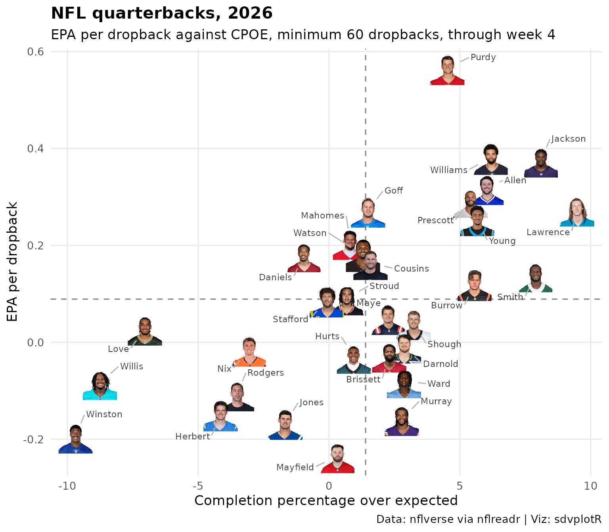

NFL Weekly Leaderboard
Source:vignettes/articles/leaderboard-nfl-weekly.Rmd
leaderboard-nfl-weekly.RmdOn this page
Updated 2026-10-09: the 2026 season through week 4 (64 games).
This page is rebuilt every week with the site. It finds the latest NFL season with play-by-play, ranks every team by EPA (expected points added) per play, plots offense against defense, and lists the most efficient quarterbacks with their headshots: the season to date while games are being played, the last full regular season in the offseason. Data: nflverse play-by-play and schedules, read with nflreadr.
Picking the season
The season starts in September, so before then the calendar points at
last season. nflverse publishes a season’s play-by-play file with its
first games; until then nflreadr::load_pbp() errors, and
the page steps back one season instead of failing. The status line above
comes from the schedule: games still to play mean the season to date, a
played Super Bowl means the offseason.
library(sdvplotR)
library(dplyr, warn.conflicts = FALSE)
library(ggplot2)
library(gt)
today <- Sys.Date()
# The season starts in September, so before then the calendar points at last season
current <- as.integer(format(today, "%Y")) - (format(today, "%m") < "09")
# A season's regular-season plays, or NULL when nflverse has not published any:
# load_pbp() errors for a season past nflreadr::most_recent_season()
regular_season <- function(season) {
pbp <- tryCatch(nflreadr::load_pbp(season), error = function(e) NULL)
if (is.null(pbp)) {
return(NULL)
}
pbp <- filter(pbp, season_type == "REG")
if (nrow(pbp) == 0) NULL else pbp
}
season <- current
pbp <- regular_season(season)
if (is.null(pbp)) {
season <- current - 1
pbp <- regular_season(season)
}
stopifnot(!is.null(pbp))
schedule <- nflreadr::load_schedules(season)
week <- max(pbp$week)
n_games <- n_distinct(pbp$game_id)
unplayed <- sum(schedule$game_type == "REG" & is.na(schedule$result))
super_bowl <- any(schedule$game_type == "SB" & !is.na(schedule$result))
through <- if (unplayed > 0) paste("through week", week) else "final regular season"
status <- if (unplayed > 0) {
sprintf("the %d season through week %d (%d games).", season, week, n_games)
} else if (!super_bowl) {
sprintf("the final %d regular season; the playoffs are under way.", season)
} else {
sprintf(
"the offseason, so this is the final %d regular season. The %d season starts in September.",
season, season + 1
)
}1. Power table
Every team’s record and point differential from the schedule, and its
EPA per pass or run play on offense and allowed on defense, from the
play-by-play. Net EPA per play is offense minus defense; the trend
compares each team’s last three games with its season.
gt_merge_stack_team_color() stacks the record under the
nickname in team colors, gt_delta() computes the trend, and
gt_sdv_logos() turns the nflverse abbreviations into
logos.
plays <- pbp |>
filter(pass == 1 | rush == 1, !is.na(epa), !is.na(posteam))
offense <- plays |>
group_by(game_id, week, team = posteam) |>
summarise(off = sum(epa), off_n = n(), .groups = "drop")
defense <- plays |>
group_by(game_id, team = defteam) |>
summarise(dfn = sum(epa), dfn_n = n(), .groups = "drop")
# a fixed row order: every sum below adds up in the same order each week
per_game <- inner_join(offense, defense, by = c("game_id", "team")) |>
arrange(team, week)
per_play <- function(games) {
games |>
group_by(team) |>
summarise(
off_epa = sum(off) / sum(off_n),
def_epa = sum(dfn) / sum(dfn_n),
.groups = "drop"
) |>
mutate(net = off_epa - def_epa)
}
last3 <- per_game |>
group_by(team) |>
slice_tail(n = 3) |>
ungroup() |>
per_play() |>
select(team, last3 = net)
games <- filter(schedule, game_type == "REG", game_id %in% pbp$game_id)
record <- bind_rows(
transmute(games, team = home_team, pf = home_score, pa = away_score),
transmute(games, team = away_team, pf = away_score, pa = home_score)
) |>
group_by(team) |>
summarise(
w = sum(pf > pa), l = sum(pf < pa), t = sum(pf == pa), diff = sum(pf - pa),
.groups = "drop"
) |>
mutate(record = if_else(t > 0, paste(w, l, t, sep = "-"), paste(w, l, sep = "-")))
nicknames <- nflreadr::load_teams() |>
select(team = team_abbr, name = team_nick)
power <- per_play(per_game) |>
inner_join(last3, by = "team") |>
inner_join(record, by = "team") |>
inner_join(nicknames, by = "team") |>
arrange(desc(net), team) |> # the team breaks a tie, so an unchanged week renders the same
mutate(rank = row_number()) |>
select(rank, team, name, record, diff, off_epa, def_epa, net, last3)
head(power)
#> # A tibble: 6 × 9
#> rank team name record diff off_epa def_epa net last3
#> <int> <chr> <chr> <chr> <int> <dbl> <dbl> <dbl> <dbl>
#> 1 1 SF 49ers 4-0 58 0.274 0.00682 0.267 0.234
#> 2 2 JAX Jaguars 3-1 51 0.137 -0.0634 0.201 0.112
#> 3 3 KC Chiefs 4-0 41 0.157 -0.0314 0.188 0.122
#> 4 4 CHI Bears 3-1 47 0.116 -0.0657 0.182 0.202
#> 5 5 BAL Ravens 3-1 20 0.160 0.00827 0.152 0.0737
#> 6 6 LV Raiders 3-1 31 0.0301 -0.122 0.152 0.137
good_bad <- c("#c84630", "#f7f7f7", "#2e8b57")
reach <- max(abs(c(power$off_epa, power$def_epa))) # one symmetric scale for both sides
power |>
gt(id = "nfl-power") |> # a fixed id: gt draws a random one otherwise
tab_header(
title = paste("NFL power table,", season),
subtitle = paste("Ranked by net EPA per play,", through)
) |>
fmt_number(c(off_epa, def_epa, net, last3), decimals = 3, force_sign = TRUE) |>
fmt_number(diff, decimals = 0, force_sign = TRUE) |>
data_color(off_epa, palette = good_bad, domain = c(-reach, reach)) |>
data_color(def_epa, palette = rev(good_bad), domain = c(-reach, reach)) |>
data_color(net, palette = good_bad, domain = c(-1, 1) * max(abs(power$net))) |>
tab_spanner("EPA per play", c(off_epa, def_epa, net, last3)) |>
cols_label(
rank = "", team = "", name = "Team", diff = "Pt diff",
off_epa = "Offense", def_epa = "Defense", net = "Net", last3 = "Last 3"
) |>
tab_source_note(paste(
"Data: nflverse play-by-play via nflreadr. Pass and run plays;",
"defense is EPA allowed (lower is better). Viz: sdvplotR"
)) |>
gt_merge_stack_team_color(name, record, team, sport = "nfl") |>
gt_delta(net, last3, column_label = "Trend", decimals = 3, arrows = TRUE) |>
gt_sdv_logos(columns = team, sport = "nfl", height = 26) |>
gt_theme_athletic()| NFL power table, 2026 | ||||||||
| Ranked by net EPA per play, through week 4 | ||||||||
| Team | Pt diff |
EPA per play
|
Trend | |||||
|---|---|---|---|---|---|---|---|---|
| Offense | Defense | Net | Last 3 | |||||
| 1 |  |
49ers
4-0
|
+58 | +0.274 | +0.007 | +0.267 | +0.234 | ▼ 0.033 |
| 2 |  |
Jaguars
3-1
|
+51 | +0.137 | −0.063 | +0.201 | +0.112 | ▼ 0.088 |
| 3 |  |
Chiefs
4-0
|
+41 | +0.157 | −0.031 | +0.188 | +0.122 | ▼ 0.066 |
| 4 |  |
Bears
3-1
|
+47 | +0.116 | −0.066 | +0.182 | +0.202 | ▲ 0.020 |
| 5 |  |
Ravens
3-1
|
+20 | +0.160 | +0.008 | +0.152 | +0.074 | ▼ 0.079 |
| 6 |  |
Raiders
3-1
|
+31 | +0.030 | −0.122 | +0.152 | +0.137 | ▼ 0.015 |
| 7 |  |
Vikings
4-0
|
+35 | −0.084 | −0.209 | +0.125 | +0.084 | ▼ 0.041 |
| 8 |  |
Seahawks
3-1
|
+32 | +0.019 | −0.103 | +0.122 | +0.124 | ▲ 0.002 |
| 9 |  |
Rams
2-2
|
+2 | +0.006 | −0.098 | +0.104 | +0.266 | ▲ 0.162 |
| 10 |  |
Bills
3-1
|
+20 | +0.195 | +0.117 | +0.078 | +0.037 | ▼ 0.041 |
| 11 |  |
Panthers
2-2
|
+12 | +0.086 | +0.016 | +0.070 | +0.180 | ▲ 0.110 |
| 12 |  |
Bengals
2-2
|
+12 | +0.046 | −0.023 | +0.068 | +0.066 | ▼ 0.002 |
| 13 |  |
Falcons
2-2
|
+4 | −0.025 | −0.055 | +0.030 | +0.071 | ▲ 0.041 |
| 14 |  |
Cowboys
2-2
|
+10 | +0.199 | +0.191 | +0.009 | +0.049 | ▲ 0.040 |
| 15 |  |
Jets
1-3
|
−8 | +0.018 | +0.024 | −0.006 | −0.085 | ▼ 0.079 |
| 16 |  |
Browns
3-1
|
−14 | −0.006 | +0.016 | −0.023 | +0.107 | ▲ 0.129 |
| 17 |  |
Patriots
2-2
|
−12 | −0.039 | −0.011 | −0.029 | +0.001 | ▲ 0.030 |
| 18 |  |
Lions
2-2
|
−8 | +0.144 | +0.203 | −0.060 | −0.072 | ▼ 0.012 |
| 19 |  |
Commanders
1-3
|
−34 | −0.036 | +0.029 | −0.065 | −0.098 | ▼ 0.033 |
| 20 |  |
Broncos
2-2
|
−20 | −0.021 | +0.046 | −0.067 | +0.048 | ▲ 0.115 |
| 21 |  |
Steelers
2-2
|
−10 | −0.072 | −0.003 | −0.069 | −0.134 | ▼ 0.065 |
| 22 |  |
Giants
3-1
|
+3 | −0.047 | +0.031 | −0.078 | −0.146 | ▼ 0.068 |
| 23 |  |
Colts
2-2
|
−2 | −0.048 | +0.039 | −0.087 | +0.016 | ▲ 0.103 |
| 24 |  |
Buccaneers
0-4
|
−20 | −0.159 | −0.066 | −0.093 | −0.090 | ▲ 0.003 |
| 25 |  |
Texans
0-4
|
−25 | −0.030 | +0.064 | −0.094 | −0.080 | ▲ 0.015 |
| 26 |  |
Cardinals
1-3
|
−30 | −0.019 | +0.085 | −0.104 | −0.233 | ▼ 0.129 |
| 27 |  |
Titans
0-4
|
−28 | −0.074 | +0.038 | −0.112 | −0.065 | ▲ 0.047 |
| 28 |  |
Chargers
0-4
|
−39 | −0.146 | −0.021 | −0.125 | −0.057 | ▲ 0.068 |
| 29 |  |
Saints
1-3
|
−23 | +0.010 | +0.153 | −0.143 | −0.224 | ▼ 0.081 |
| 30 |  |
Packers
2-2
|
−32 | −0.074 | +0.070 | −0.144 | −0.103 | ▲ 0.041 |
| 31 |  |
Eagles
2-2
|
−18 | −0.110 | +0.062 | −0.172 | −0.211 | ▼ 0.040 |
| 32 |  |
Dolphins
0-4
|
−55 | −0.144 | +0.092 | −0.236 | −0.249 | ▼ 0.013 |
| Data: nflverse play-by-play via nflreadr. Pass and run plays; defense is EPA allowed (lower is better). Viz: sdvplotR | ||||||||
gt_save_crop(table, "nfl-power.png") renders the same
table to a trimmed PNG, ready to post; see Saving and Posting Tables.
2. Offense against defense
The same EPA per play as a scatter, one logo per team. The y axis is reversed so the better defenses sit higher: the top-right corner is where good teams live. The faint diagonals are lines of equal net EPA per play, 0.1 apart.
ggplot(power, aes(x = off_epa, y = def_epa)) +
geom_abline(slope = 1, intercept = seq(-0.6, 0.6, by = 0.1), colour = "grey88", linewidth = 0.3) +
geom_hline(yintercept = mean(power$def_epa), linetype = "dashed", colour = "grey55") +
geom_vline(xintercept = mean(power$off_epa), linetype = "dashed", colour = "grey55") +
geom_sdv_logos(aes(team = team), sport = "nfl", width = 0.06, alpha = 0.9) +
# logos do not widen the limits, so leave room for the outermost ones
scale_x_continuous(expand = expansion(mult = 0.07)) +
scale_y_reverse(expand = expansion(mult = 0.07)) +
labs(
title = paste("NFL offense and defense,", season),
subtitle = paste("EPA per pass or run play,", through),
x = "Offense: EPA per play",
y = "Defense: EPA allowed per play (reversed)",
caption = "Data: nflverse via nflreadr | Viz: sdvplotR"
) +
theme_minimal(base_size = 13) +
theme(plot.title = element_text(face = "bold"), panel.grid.minor = element_blank())
3. Quarterback leaderboard
EPA per dropback (passes, sacks and scrambles) for quarterbacks with
at least 15 dropbacks per team game, with completion percentage over
expected (CPOE). The play-by-play’s id column is the
passer’s GSIS id, which is what gt_sdv_headshots() takes
for the NFL; the season’s rosters, keyed by the same id, give the full
names.
team_games <- max(count(per_game, team)$n)
qbs <- pbp |>
filter(qb_dropback == 1, !is.na(qb_epa), !is.na(id)) |>
arrange(game_id, play_id) |>
group_by(id) |>
summarise(
name = last(name),
team = last(posteam),
dropbacks = n(),
epa = mean(qb_epa),
cpoe = mean(cpoe, na.rm = TRUE),
success = mean(success, na.rm = TRUE),
td = sum(pass_touchdown, na.rm = TRUE),
int = sum(interception, na.rm = TRUE),
.groups = "drop"
) |>
filter(dropbacks >= 15 * team_games) |>
arrange(desc(epa), id) |>
mutate(rank = row_number(), headshot = id)
full_names <- nflreadr::load_rosters(season) |>
distinct(id = gsis_id, full_name) |>
filter(!is.na(id), !duplicated(id))
qbs <- qbs |>
left_join(full_names, by = "id") |>
mutate(name = coalesce(full_name, name))
nrow(qbs)
#> [1] 31
qbs |>
slice_head(n = 16) |>
select(rank, headshot, name, team, dropbacks, epa, cpoe, success, td, int) |>
gt(id = "nfl-qbs") |>
tab_header(
title = paste("NFL quarterbacks by EPA per dropback,", season),
subtitle = paste0("Minimum ", 15 * team_games, " dropbacks, ", through)
) |>
fmt_number(epa, decimals = 3, force_sign = TRUE) |>
fmt_number(cpoe, decimals = 1, force_sign = TRUE) |>
fmt_percent(success, decimals = 1) |>
cols_label(
rank = "", headshot = "", name = "Quarterback", team = "", dropbacks = "Dropbacks",
epa = "EPA/db", cpoe = "CPOE", success = "Success", td = "TD", int = "INT"
) |>
tab_source_note("Data: nflverse play-by-play via nflreadr | Viz: sdvplotR") |>
gt_color_pills(
epa,
palette = good_bad, domain = c(-1, 1) * max(abs(qbs$epa)), digits = 3, pill_height = 22
) |>
gt_sdv_headshots(columns = headshot, sport = "nfl", height = 34) |>
gt_sdv_logos(columns = team, sport = "nfl", height = 22) |>
gt_theme_sdv()| NFL quarterbacks by EPA per dropback, 2026 | |||||||||
| Minimum 60 dropbacks, through week 4 | |||||||||
| Quarterback | Dropbacks | EPA/db | CPOE | Success | TD | INT | |||
|---|---|---|---|---|---|---|---|---|---|
| 1 |  |
Brock Purdy | |
122 | 0.566 | +4.5 | 62.3% | 11 | 1 |
| 2 |  |
Caleb Williams | |
70 | 0.381 | +6.2 | 48.6% | 2 | 1 |
| 3 |  |
Lamar Jackson | |
111 | 0.375 | +8.1 | 57.7% | 6 | 1 |
| 4 |  |
Josh Allen | |
138 | 0.318 | +6.0 | 44.2% | 6 | 3 |
| 5 |  |
Dak Prescott | |
168 | 0.292 | +5.4 | 50.0% | 8 | 1 |
| 6 |  |
Trevor Lawrence | |
114 | 0.274 | +9.5 | 51.8% | 8 | 2 |
| 7 |  |
Jared Goff | |
174 | 0.272 | +1.5 | 51.1% | 9 | 0 |
| 8 |  |
Bryce Young | |
175 | 0.254 | +5.7 | 46.3% | 9 | 2 |
| 9 |  |
Patrick Mahomes | |
143 | 0.205 | +0.8 | 49.0% | 9 | 2 |
| 10 |  |
Deshaun Watson | |
140 | 0.180 | +1.3 | 50.0% | 6 | 2 |
| 11 |  |
Jayden Daniels | |
62 | 0.180 | −1.0 | 43.5% | 3 | 0 |
| 12 |  |
Kirk Cousins | |
152 | 0.164 | +1.6 | 49.3% | 11 | 4 |
| 13 |  |
Geno Smith | |
138 | 0.138 | +7.9 | 47.1% | 5 | 0 |
| 14 |  |
Joe Burrow | |
171 | 0.120 | +5.6 | 48.0% | 7 | 3 |
| 15 |  |
C.J. Stroud | |
166 | 0.091 | +0.7 | 47.6% | 5 | 0 |
| 16 |  |
Matthew Stafford | |
169 | 0.087 | −0.1 | 46.7% | 6 | 6 |
| Data: nflverse play-by-play via nflreadr | Viz: sdvplotR | |||||||||
The same quarterbacks on the two axes, each drawn as his headshot. Up and to the right is efficient and accurate.
ggplot(qbs, aes(x = cpoe, y = epa)) +
geom_hline(yintercept = mean(qbs$epa), linetype = "dashed", colour = "grey55") +
geom_vline(xintercept = mean(qbs$cpoe), linetype = "dashed", colour = "grey55") +
geom_sdv_headshots(aes(player_id = id), sport = "nfl", height = 0.08) +
ggrepel::geom_text_repel(
aes(label = sub("^\\S+\\s+", "", name)), # the last name
size = 3, colour = "grey25", point.size = 13, box.padding = 0.35,
min.segment.length = 0, segment.colour = "grey70", max.overlaps = Inf,
seed = 2026 # a seed: the same layout each week
) +
labs(
title = paste("NFL quarterbacks,", season),
subtitle = paste0("EPA per dropback against CPOE, minimum ", 15 * team_games, " dropbacks, ", through),
x = "Completion percentage over expected",
y = "EPA per dropback",
caption = "Data: nflverse via nflreadr | Viz: sdvplotR"
) +
theme_minimal(base_size = 13) +
theme(plot.title = element_text(face = "bold"), panel.grid.minor = element_blank())
Related
- Leaderboard Dashboards for layout patterns.
- College football weekly, and the NBA, WNBA, MLB and NHL leaderboards.
- Social graphics, automated posts tables like these on a schedule.